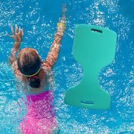

Apprendre à nager à un enfant
Pour pouvoir profiter de la piscine dès leur plus jeune âge, les enfants doivent apprendre à nager.
C’est une étape plus ou moins difficile selon les enfants. Avant d’apprendre à nager,
il faut commencer par s’habituer à l’eau et apaiser ses éventuelles craintes.
À quel âge un enfant peut-il apprendre à nager ?
Pour apprendre à nager, le plus tôt est le mieux. Il n’y a pas d’âge requis et cela dépend de chaque enfant, mais généralement avant 6/7 ans on parlera plus de familiarisation avec l'univers aquatique que véritablement d'apprentissage de la natation.
Si l’enfant a été très vite habitué à l’eau (grâce aux séances de bébé nageur par exemple), il aura moins peur de l’eau. Or, c’est souvent la peur de l’eau qui retarde l’apprentissage de la nage. L’enfant doit d’abord être rassuré et savoir s’amuser dans l’eau.
La natation est dans les programmes d’éducation sportive à partir de l’école maternelle. C’est l’occasion pour les enfants d’apprendre à nager ou de faire des progrès en natation.
Comment apprendre à nager à votre enfant ?
Tout d’abord, vous pouvez proposer à votre enfant des exercices à faire dans l’eau : mettre la tête sous l’eau, faire la planche, se propulser en poussant sur ses pieds… Si votre enfant sait faire tout cela, il est prêt !
Pour apprendre à nager à votre enfant, montrez-lui les mouvements de la brasse, qui est la nage la plus facile à apprendre. Dans un premier temps, votre enfant peut se tenir au bord de la piscine pour s’entrainer à faire les mouvements de jambes (la « grenouille »), ou alors tenir une frite sous ses bras. Vous pouvez ensuite le soutenir au niveau de la taille pour qu’il ajoute les mouvements de bras. Ensuite, laissez-le nager seul progressivement. Il faut commencer par de petites distances, là où l’enfant a encore pied. Quand il sera plus à l’aise, il ira dans le grand bassin.
Pour apprendre à nager à votre enfant, rien de tel que des cours de natation adaptés à son âge ou à son niveau.
Pour apprendre à nager à un enfant, l’essentiel est de savoir le rassurer et l’encourager. Restez près de lui, montrez lui les mouvements, et soyez patient : il va bientôt pouvoir se lancer tout seul !